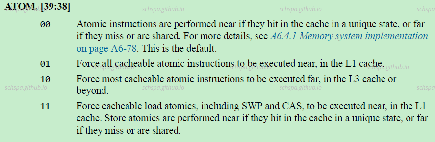

Atomic operation in aarch64
Table of Contents
在Linux内核中看到下面这句话:
At least on ARM, pgprot_noncached causes the
memory to be mapped strongly ordered, and atomic operations on strongly ordered
memory are implementation defined, and won't work on many ARMs such as omaps.
所以, 为什么对用户non-cached的内存,部分平台不支持原子操作?
先看看ARM64平台原子操作实现原理
先看看Linux内核中的实现。
linux
atomic_read & atomic_set
#define atomic_read(v) READ_ONCE((v)->counter)#define atomic_set(v, i) WRITE_ONCE(((v)->counter), (i))对于读和写，在ARM平台上使用正常使用的读写操作即可。
atomic_add & atomic_dec
对于加减的原子操作，由于需要执行读，改，写三步，需要使用特殊的指令才可以实现。
static inline voidatomic_add(int i, atomic_t *v){kasan_check_write(v, sizeof(*v));arch_atomic_add(i, v);}#define atomic_add atomic_addATOMIC_OP(atomic_add)#define ATOMIC_OP(op) \static inline void arch_##op(int i, atomic_t *v) \{ \__lse_ll_sc_body(op, i, v); \}#define __lse_ll_sc_body(op, ...) \({ \system_uses_lse_atomics() ? \__lse_##op(__VA_ARGS__) : \__ll_sc_##op(__VA_ARGS__); \})
- Linux atomic指令的两种实现
- LSE
使用ARMv8.1中新增加的原子操作指令
#define ATOMIC_OP(op, asm_op) \static inline void __lse_atomic_##op(int i, atomic_t *v) \{ \asm volatile( \" " #asm_op " %w[i], %[v]\n" \: [i] "+r" (i), [v] "+Q" (v->counter) \: "r" (v)); \}ATOMIC_OP(andnot, stclr)ATOMIC_OP(or, stset)ATOMIC_OP(xor, steor)ATOMIC_OP(add, stadd)static inline void __lse_atomic64_sub(s64 i, atomic64_t *v){asm volatile(" neg %[i], %[i]\n"" stadd %[i], %[v]": [i] "+&r" (i), [v] "+Q" (v->counter): "r" (v));}从上可以看到，系统使用了单条指令stadd就完成了原子加操作，这些指令是ARMv8.1 添加的指令，并不是所有的AARCH64都支持这种指令。
- LL_SC]] Load-link/store-condiitional
#define ATOMIC_OP(op, asm_op, constraint) \static inline void \__ll_sc_atomic_##op(int i, atomic_t *v) \{ \unsigned long tmp; \int result; \\asm volatile("// atomic_" #op "\n" \__LL_SC_FALLBACK( \" prfm pstl1strm, %2\n" \"1: ldxr %w0, %2\n" \" " #asm_op " %w0, %w0, %w3\n" \" stxr %w1, %w0, %2\n" \" cbnz %w1, 1b\n") \: "=&r" (result), "=&r" (tmp), "+Q" (v->counter) \: __stringify(constraint) "r" (i)); \}#define ATOMIC_OPS(...) \ATOMIC_OP(__VA_ARGS__) \ATOMIC_OP_RETURN( , dmb ish, , l, "memory", __VA_ARGS__)\ATOMIC_OP_RETURN(_relaxed, , , , , __VA_ARGS__)\ATOMIC_OP_RETURN(_acquire, , a, , "memory", __VA_ARGS__)\ATOMIC_OP_RETURN(_release, , , l, "memory", __VA_ARGS__)\ATOMIC_FETCH_OP ( , dmb ish, , l, "memory", __VA_ARGS__)\ATOMIC_FETCH_OP (_relaxed, , , , , __VA_ARGS__)\ATOMIC_FETCH_OP (_acquire, , a, , "memory", __VA_ARGS__)\ATOMIC_FETCH_OP (_release, , , l, "memory", __VA_ARGS__)ATOMIC_OPS(add, add, I)ATOMIC_OPS(sub, sub, J)从这里的实现可一看到，系统同过ldxr和stxr指令对配和算数运算指令一同完成原子操作。
- LSE
ARM64平台原子操作指令
A64: ldx, ldax,stx,stlx
A32/T32: ldrex, strex, ldaex, stlex
- 从上面Linux的实现中就可以得知，在ARMv8中有对于原子操作有两种不同得实现，一种是LLSC形式的原子操作，另一种是LSE
ARMV8a中的设置
ARMv8a手册
ARMV8a中对于原子操作的描述
以上地方仅仅描述了原子操作指令使用时需要注意的地方，并无法找到我们的答案，下面去看看CPU手册吧。
{kind=link}
Crotex A55手册
{kind=link}
- 从上面可以看到,在ARMv8中, 对于cacheable memory, 原子操作都是没有问题的, 因为系统可以通过cache来完成原子操作.
对于devices或者non-cacheable内存, 原子操作依赖于互联网络的支持. 在arm上就是各种AMBA总线,如果互联网络不支持的话,就会引发同步或者异步的异常.
从以上信息可知，对于部分non-cacheable内存，在ARM平台上，不支持原子操作的原因是因为硬件的互连网络不支持原子操作。
CPUECTLR.ATOM

通过CPU的这个寄存器可以控制atomic访问的时候具体是使用near/far，默认的配置中，根据不同的情况，硬件一般会自动根据cache hit的情况自动切换，这之中并不需要软件的参与。
总线的设置
关于AMBA总线:
参考 `代码改变世界ctw` 的文章，可以对AMBA总线有个大概的了解
https://blog.csdn.net/weixin_42135087/article/details/111557929
在总线上，为了exclude access，硬件上有一套具体的协议来支持，并且有相应信号。
AMBA AXI: Atomic transaction support
从上面arm官方的示意图中，AMBA中 exclusive access monitor 会存储传输的id和地址，由此来监控原子传输。
对于内核注释中提到的omap平台，硬件上使用了哪种互连网络，最终导致了系统无法在non-cached内存中使用原子操作？
由于没有具体的OMAP平台资料，由上述的信息可以得知，这个是由于SOC内部的总线，或者最后端内存的硬件实现而造成的。不光是OMAP，很多ARM平台的SOC都有相同的问题. 但是一般cache都是打开的状态，所以软件一般不需要关心这个问题。
DONE 对于上述平台，如果软件上去使用原子操作指令访问non-cached内存，会有什么后果？
出现问题之后cpu会进入同步异常
Data abort with DFSC:
0b110101 implementation defined fault (Unsupported Exclusive or Atomic access).
esr_el3 = 0x0000000096000035